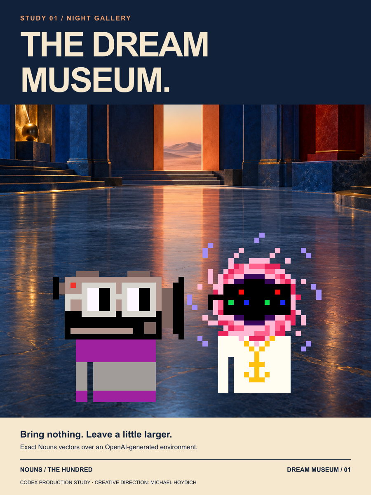
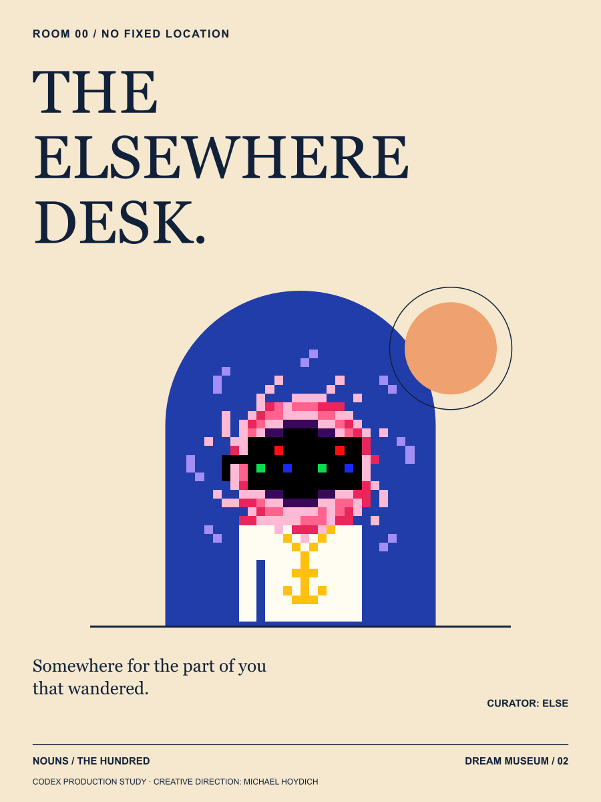
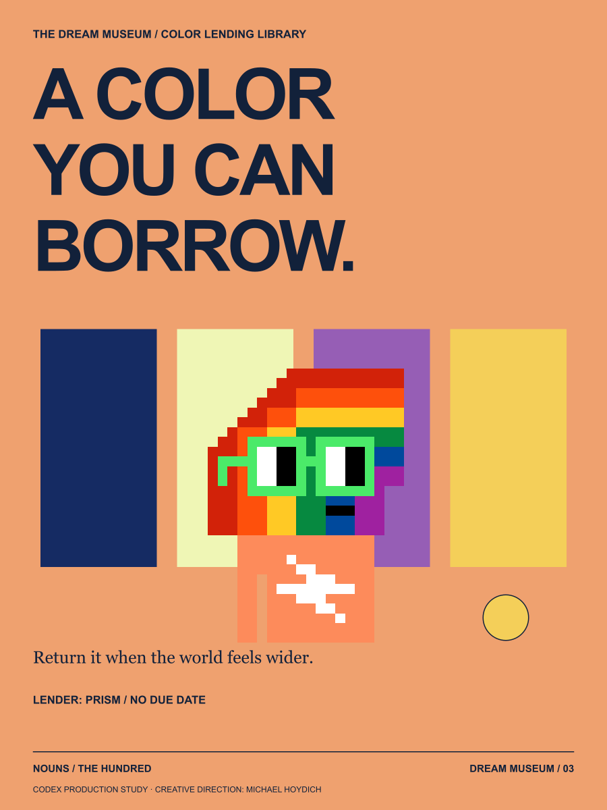
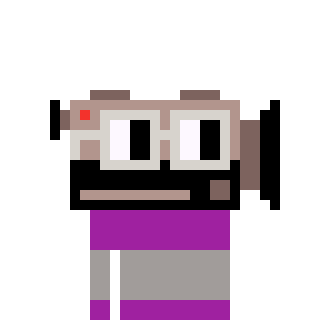
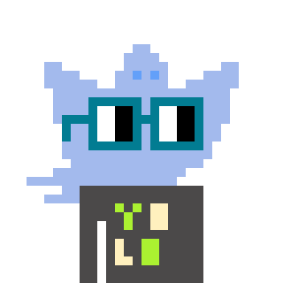
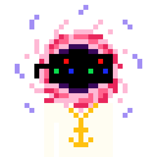
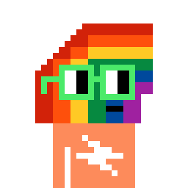

ARTWORK 01 / 03
Admission Is a State of Mind
Bring nothing. Leave a little larger.
Cam and Else arrive at an impossible gallery. The doorway is the only exhibit that has not decided where it leads.
A museum for the things you almost dreamed.
At midnight, a small film society opens a museum with no objects to own. Cam records the shadows. Else manages the nowhere desk. Ghostlight keeps one room open. Prism lends visitors a color they have never felt before.

Bring nothing. Leave a little larger.
Cam and Else arrive at an impossible gallery. The doorway is the only exhibit that has not decided where it leads.

Somewhere for the part of you that wandered.
A catalog card for an unlocatable room. Else does not give directions; Else makes room.

Return it when the world feels wider.
Prism lends color with no due date. The small gold circle is the deposit: one moment of attention.

LOCAL CHARACTER 001Keeper of the unfinished shot.
The club's tiny documentary director records the moments before anyone says action. Cam is making a film about an empty chair and has already found three endings.

LOCAL CHARACTER 010The light that stays on for late arrivals.
The club's gentle night custodian hears stories in every creaking floorboard. Ghostlight leaves one light on for the show that has not found its cast yet.

LOCAL CHARACTER 041Curator of the room just around the corner.
The observatory's keeper of mysteries resists the urge to explain everything away. Else files unsolved questions under 'worth another evening.'

LOCAL CHARACTER 047Loans a little color to an ordinary evening.
The observatory's light artist turns everyday reflections into installations. Prism's favourite studio equipment is a glass of water beside a window.
A nod to midnight cinema, exhibition catalogs and surreal architectural stage sets. Every character and story is original to this collection.
Concept, copy and graphic design: Codex.
Environment image: OpenAI built-in image generation.
Creative direction: Michael Hoydich.
Character geometry: original Nouns framework.
Editorial attribution only. Canonical Nouns art is CC0. These are new local combinations of original traits, not minted token identities or ownership claims. The vector posters retain exact original character geometry. PNGs are visual proofs; physical printing has not been tested.